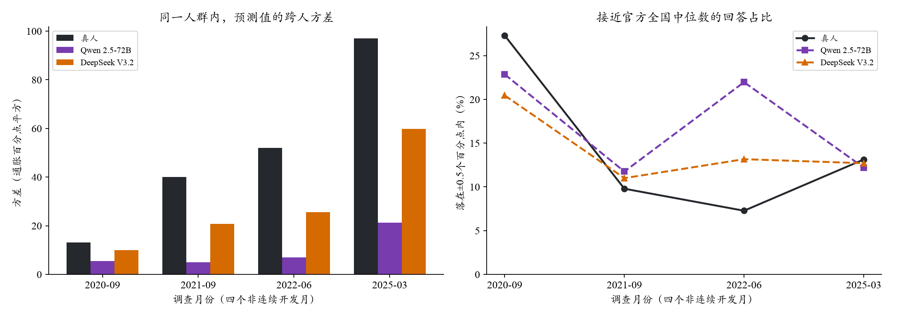

返回原V3.2比较
V3.2的回答是否集中在真实中位数附近？
现有轨迹没有显示这种集中模式：V3.2比Qwen保留了更宽的跨人差异，接近当月真人中位数的回答比例与真人自身接近。这不能排除训练污染。
同提示、温度0.5；2020-09、2021-09、2022-06、2025-03；共同支持381个人月，各两遍。只读旧计分缓存，0新API、0重新拟合。

分开看人际差异和随机波动
按月使用同一人群及设计权重，模型统计先平均两遍，再等权平均月份。标准差是逐月逐遍标准差的平均，不等于表中平均方差再开方。同批中位数与官方全国中位数分别列出，不混用。
- Qwen 2.5-72B：同一个人两遍回答平均相差 0.675pp；人内生成方差 1.20pp²。
- DeepSeek V3.2：同一个人两遍回答平均相差 0.633pp；人内生成方差 1.26pp²。
能够说明什么
V3.2增加的跨人差异，没有伴随同等幅度的人内生成噪声增加。这与“更保留个人原有信念”的解释相容，但不是对模型内部机制的因果证明。
仍不能说明什么
模型即使接触过全国中位数，也可能根据提示生成分散的个人回答；反过来，共同输入也可能使一个没有记忆真值的模型回答集中。因此方差与集中比例是描述性检查，不能据此给出“未记忆真值”的概率。
下一步冻结其他2025月份的同人基线与真值，观察逐月中心、分布和先验组表现；2026发布后结果用于补充总体层面证据。新月份不用于调提示或拟合组合权重。
新增2025月份：真值与基线已准备
每月192人，合计768个人月（610名不同受访者），模型计划生成两遍。人口与上期信念先冻结，再单独提取本期真值；本期5份Q9不可计分记录不触发重新选人。新增四个月的模拟现已完成，结果单独展示。
四个月全国照抄MAE为0.121pp；同人群“照抄本人上期”的群体中位数MAE为0.114pp。两种对象单独比较，不能混用。月份按时间覆盖预选，不因基线很强而改选。
全国真值来自纽约联储最新下载chart.xlsx；同人真值使用项目冻结Q9计分器。均为评价资料，不进入本期模型提示。新闻2310篇/289批已完成，用量估算$0.366（非账单）。四个2025月模拟已完成，正式结果与缺失敏感性；运行记录。基线聚合与口径。
机器可读：统计与口径。2026-10-21。